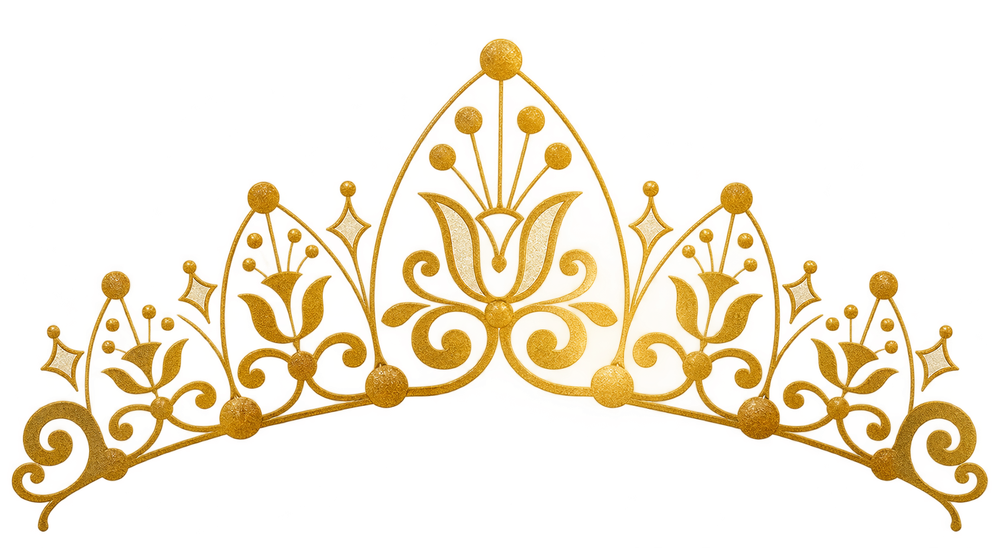
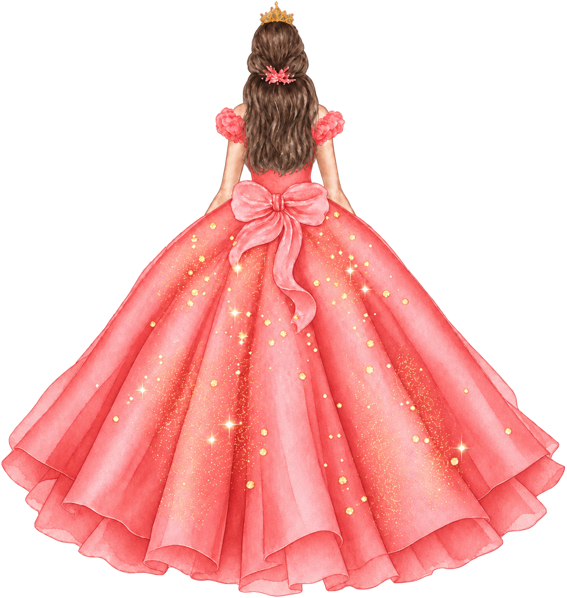

La ceremonia
Misa
7:00 p. m.
Parroquia del Amor
Misericordioso de Jesús

Acompáñanos a celebrar los
15 años de
Viernes
Salón Durango Palace
¡Te espero!

Cada vez falta menos
30 de octubre · 7:00 p. m. · Durango
Con todo mi cariño
Oscar Omar Reyna Vargas
Fátima Ruiz Colesio
Vianey Sariñana Roacho
José Luis Morales Ramírez
Viernes · 30 de octubre de 2026
Dos momentos especiales para compartir contigo.
La ceremonia
7:00 p. m.
Parroquia del Amor
Misericordioso de Jesús
La celebración
8:30 p. m.
Salón de eventos
Durango Palace
Para este día especial
Traje formal
El rosa salmón está reservado
para la quinceañera.
Lluvia de sobres o regalo
Tu compañía es lo más especial
de esta celebración.
Un lugar para ti
Me encantará compartir esta noche contigo.
Pase válido para 2 personas
30 de octubre de 2026Esta respuesta se guarda solo en este navegador. Aún no se envía a la anfitriona.